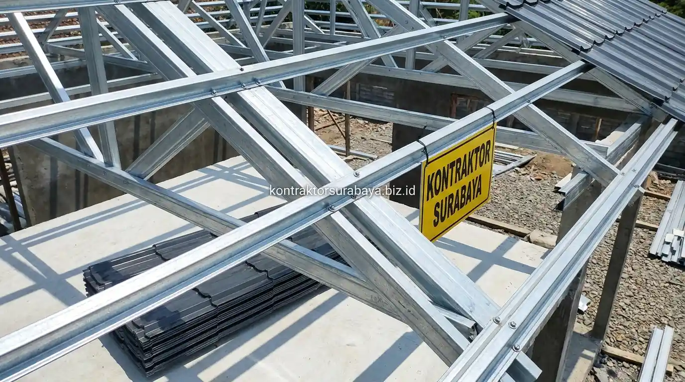

Kawasan Gresik seperti Kebomas, Driyorejo, Manyar, hingga Menganti memiliki karakteristik iklim pesisir dengan kelembapan tinggi serta terpaan angin kencang. Hal ini membuat banyak pemilik rumah tinggal maupun tempat usaha beralih dari rangka kayu konvensional ke rangka atap baja ringan (Galvalume/Zincalume) yang tahan rayap, tidak lapuk, dan memiliki durabilitas puluhan tahun. Namun, banyak calon klien yang masih ragu bagaimana cara menghitung estimasi biaya pemasangannya secara akurat.
1. Faktor yang Menentukan Estimasi Biaya Pasang Atap Baja Ringan per Meter Persegi
Jenis profil baja ringan, jenis penutup atap, kompleksitas bentuk atap, dan tingkat aksesibilitas lokasi adalah empat faktor utama yang menentukan variasi estimasi biaya pemasangan atap baja ringan:
- Jenis Profil Baja Ringan: Profil kanal C (seperti C75) dengan ketebalan 0,75 mm, 0,80 mm, hingga 1,00 mm memiliki harga per meter persegi yang bervariasi sesuai standar kekuatan struktural yang dibutuhkan.
- Jenis Penutup Atap: Pilihan penutup atap seperti genteng metal berpasir, spandek galvalum, genteng keramik berglazur, atau bitumen memberikan rentang harga akhir yang sangat berbeda.
- Kompleksitas Bentuk Geometri Atap: Bentuk atap perisai (limasan) dengan banyak jurai dan lembah membutuhkan lebih banyak pemotongan material serta waktu pemasangan dibanding atap pelana sederhana.
- Tingkat Aksesibilitas Lokasi Proyek: Ketinggian bangunan bertingkat, ketiadaan lahan bongkar material di depan rumah, atau gang sempit memengaruhi biaya langsir dan mobilisasi tukang.

2. Kenapa Estimasi per Meter Persegi Bisa Berbeda Antar Penyedia Jasa?
Perbedaan spesifikasi material, cakupan komponen yang termasuk dalam penawaran, dan standar upah pemasangan menjadi alasan utama mengapa estimasi biaya per meter persegi bisa berbeda cukup jauh antar penyedia jasa konstruksi.
Penawaran dengan angka yang terlihat sangat murah terkadang hanya mencakup rangka baja tipis tanpa penutup atap, tanpa talang jurai, atau tanpa baut self-drilling screw (SDS) standar anti karat. Sementara penawaran kontraktor profesional sudah mencakup seluruh komponen struktur lengkap, insulasi peredam panas (aluminium foil bubble), lisplang, dan garansi kebocoran. Membandingkan angka total tanpa memeriksa rincian komponennya sangat berisiko menimbulkan biaya siluman di tengah proyek.
3. Komponen yang Termasuk dalam Estimasi Biaya Pasang Atap Baja Ringan
Rangka baja ringan, penutup atap, aksesoris pengikat, dan jasa pemasangan adalah empat komponen yang idealnya tercantum secara terpisah dalam dokumen estimasi RAB:
- Rangka Kuda-kuda Baja Ringan (Truss C75): Komponen struktural utama yang menopang beban mati atap serta beban hidup angin dan hujan.
- Reng Baja Ringan (Batten): Komponen dudukan penutup atap yang dipasang melintang di atas kuda-kuda dengan jarak presisi sesuai tipe genteng.
- Aksesoris Pengikat & Finishing: Baut SDS anti karat, dynabolt pengikat ring balok beton, talang jurai seng galvalum, flashing dinding, dan nok/wuwungan.
- Upah Jasa Pemasangan Terampil: Dihitung berdasarkan luasan bidang miring atap (bukan luas lantai denah) dengan standar keselamatan kerja K3 yang ketat.
4. Cara Menghindari Penawaran yang Tidak Transparan dari Tukang
Meminta rincian tertulis, memeriksa spesifikasi ketebalan baja, membandingkan beberapa penawaran, dan menanyakan garansi pemasangan adalah empat langkah penting untuk mengamankan investasi properti Anda:
- Minta Dokumen Rincian Biaya (RAB Tertulis): Pastikan ada daftar volume, harga satuan material, dan biaya tenaga kerja yang terpisah jelas.
- Cek Cap Emboss SNI & Ketebalan Baja: Pastikan profil baja yang dikirim ke proyek memiliki label ketebalan asli (misal BMT 0.75 mm asli, bukan 0.75 mm toleransi banci yang tipis).
- Bandingkan Penawaran dengan Spesifikasi Setara: Jangan hanya terpaku pada angka final, tetapi bandingkan merek profil baja dan tipe genteng yang ditawarkan.
- Minta Garansi Konstruksi & Kebocoran Resmi: Kontraktor terpercaya berani memberikan garansi kebocoran minimal 3 hingga 6 bulan pasca pemasangan.
5. Bagaimana Kondisi Atap Rumah Memengaruhi Total Biaya Pemasangan?
Atap yang memerlukan pembongkaran struktur lama sebelum pemasangan baja ringan baru umumnya membutuhkan biaya tambahan dibanding pemasangan pada bangunan baru tanpa struktur eksisting.
Pada proyek renovasi atap rumah lama di Gresik, biaya pembongkaran kuda-kuda kayu lapuk, pembersihan genteng lama, pembuangan puing ke tempat pembuangan akhir, serta perbaikan ring balok beton yang retak perlu diperhitungkan secara cermat agar tidak membebani anggaran tak terduga.
6. Kesalahan yang Membuat Estimasi Biaya Meleset Jauh dari Realisasi
Tidak memeriksa spesifikasi material secara detail, mengabaikan biaya pembongkaran pada proyek renovasi, tidak memperhitungkan aksesibilitas lokasi, dan hanya membandingkan angka tanpa rincian adalah empat kesalahan fatal yang kerap terjadi:
- Mengabaikan Perhitungan Overstek: Terpaku pada luas denah rumah tanpa memperhitungkan tritisan/overstek keliling 0,8 - 1,0 meter yang menambah luas atap hingga 20-30%.
- Mengabaikan Komponen Insulasi Panas: Di kawasan pesisir Gresik yang terik, tidak memasang insulasi peredam panas akan membuat ruangan di bawah atap sangat panas dan berisik saat hujan.
- Mempekerjakan Tenaga Non-Spesialis: Pemasangan kuda-kuda baja ringan membutuhkan perhitungan software struktur dan jarak reng presisi. Kesalahan pasang dapat menyebabkan atap melendut atau roboh.
"Kekuatan dan keamanan atap bangunan bergantung pada ketepatan perhitungan bentang struktur serta kejujuran ketebalan baja ringan yang tertera pada dokumen RAB."
Estimasi biaya pemasangan atap baja ringan yang presisi hanya dapat disusun setelah tim teknis melakukan survei lapangan langsung dan perhitungan denah atap akurat. Pelajari simulasi rincian biaya pembangunan pada halaman jasa hitung RAB konstruksi, atau lihat portofolio proyek atap kami pada galeri proyek kami.